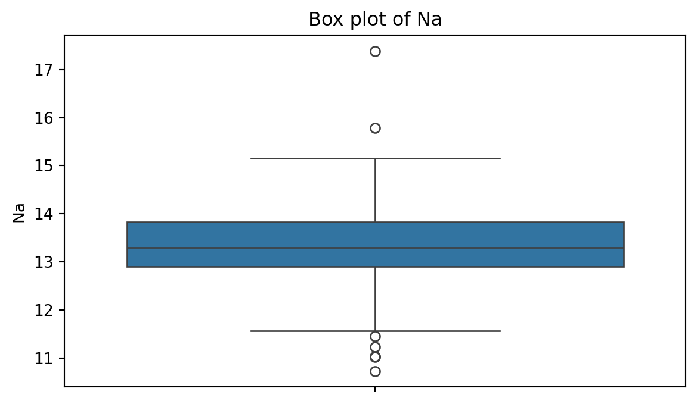
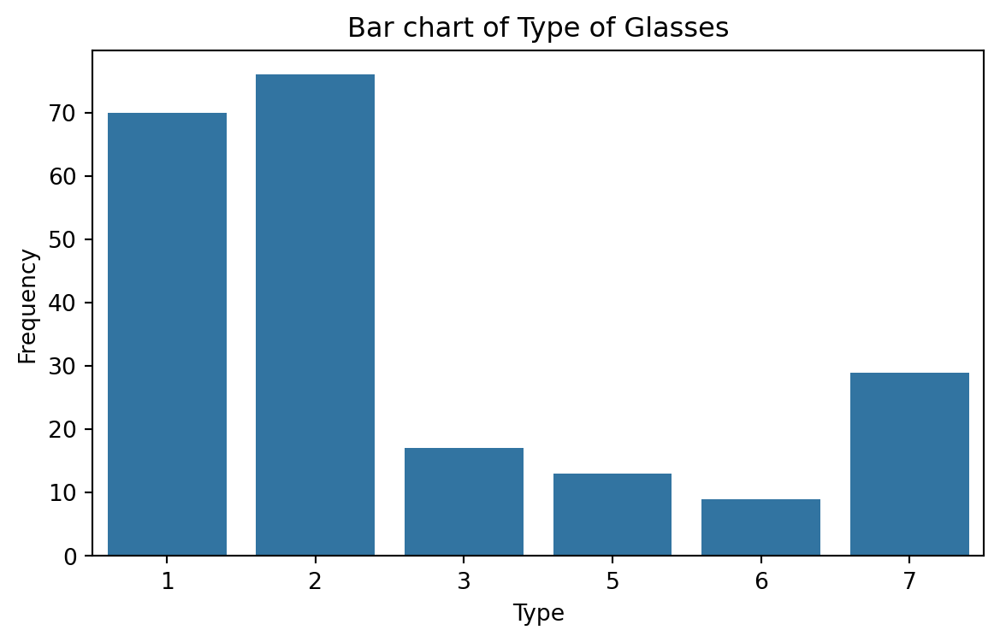

import pandas as pd
# Load the Excel file into a pandas DataFrame.
client_data = pd.read_excel("industrial_dataset.xlsx")Data Wrangling and Visualization
IN2004B: Generation of Value with Data Analytics
Agenda
- Basic Data Wrangling
- Data Visualization
Basic Data Wrangling
Data wrangling
Data wrangling is the process of transforming raw data into a clean and structured format.
It involves merging, reshaping, filtering, and organizing data for analysis.
Here, we illustrate some special functions of the pandas for cleaning common issues with a dataset.
Example 1
Consider an industrial engineer who receives a messy Excel file from a manufacturing client. The data file is called “industrial_dataset.xlsx”, which file includes data about machine maintenance logs, production output, and operator comments.
The goal is to clean and prepare this dataset using pandas so it can be analyzed.
Let’s load pandas and read the data set into Python.
# Preview the dataset.
client_data.head()| Machine ID | Output (units) | Maintenance Date | Operator | Comment | |
|---|---|---|---|---|---|
| 0 | 101 | 1200 | 2023-01-10 | Ana | ok |
| 1 | 101 | 1200 | 2023-01-10 | Ana | ok |
| 2 | 102 | 1050 | 2023-01-12 | Bob | Needs oil! |
| 3 | 103 | error | 2023-01-13 | Charlie | All good\n |
| 4 | 103 | 950 | 2023-01-13 | Charlie | All good\n |
Add an index column
In some cases, it is useful to have a unique identifier for each row in the dataset. We can create an identifier using the function .assign with some extra syntax.
client_data_single = (client_data
.assign(ID = lambda x: x.index + 1)
) The new column is appended to the end of the dataframe.
client_data_single.head()| Machine ID | Output (units) | Maintenance Date | Operator | Comment | ID | |
|---|---|---|---|---|---|---|
| 0 | 101 | 1200 | 2023-01-10 | Ana | ok | 1 |
| 1 | 101 | 1200 | 2023-01-10 | Ana | ok | 2 |
| 2 | 102 | 1050 | 2023-01-12 | Bob | Needs oil! | 3 |
| 3 | 103 | error | 2023-01-13 | Charlie | All good\n | 4 |
| 4 | 103 | 950 | 2023-01-13 | Charlie | All good\n | 5 |
To bring it to the begining of the array, we can use the .filter() function.
client_data_single = (client_data_single
.filter(['ID', 'Machine ID', 'Output (units)',
'Maintenance Date', 'Operator', 'Comment'])
)
client_data_single.head(3) | ID | Machine ID | Output (units) | Maintenance Date | Operator | Comment | |
|---|---|---|---|---|---|---|
| 0 | 1 | 101 | 1200 | 2023-01-10 | Ana | ok |
| 1 | 2 | 101 | 1200 | 2023-01-10 | Ana | ok |
| 2 | 3 | 102 | 1050 | 2023-01-12 | Bob | Needs oil! |
Fill blank cells
In the dataset, there are columns with missing values. If we would like to fill them with specific values or text, we use the .fillna() function. In this function, we use the syntaxis 'Variable': 'Replace', where the Variable is the column in the dataset and Replace is the text or number to fill the entry in.
Let’s fill in the missing entries of the columns Operator, Maintenance Date, and Comment.
complete_data = (client_data_single
.fillna({'Operator': 'Unknown',
'Maintenance Date': '2023-01-01',
'Comment': 'None'})
) complete_data.head()| ID | Machine ID | Output (units) | Maintenance Date | Operator | Comment | |
|---|---|---|---|---|---|---|
| 0 | 1 | 101 | 1200 | 2023-01-10 | Ana | ok |
| 1 | 2 | 101 | 1200 | 2023-01-10 | Ana | ok |
| 2 | 3 | 102 | 1050 | 2023-01-12 | Bob | Needs oil! |
| 3 | 4 | 103 | error | 2023-01-13 | Charlie | All good\n |
| 4 | 5 | 103 | 950 | 2023-01-13 | Charlie | All good\n |
Replace values
There are some cases in which columns have some undesired or unwatned values. Consider the Output (units) as an example.
complete_data['Output (units)'].head()0 1200
1 1200
2 1050
3 error
4 950
Name: Output (units), dtype: objectThe column has the numbers of units but also text such as “error”.
We can replace the “error” in this column by a user-specified value, say, 0. To this end, we use the function .replace(). The function has two inputs. The first one is the value to replace and the second one is the replacement value.
complete_data['Output (units)'] = complete_data['Output (units)'].replace('error', 0)Let’s check the new column.
complete_data['Output (units)']0 1200
1 1200
2 1050
3 0
4 950
...
95 800
96 1100
97 950
98 950
99 1100
Name: Output (units), Length: 100, dtype: int64Note that the new column is now numeric.
Split column into multiple ones
There are some cases in which we want to split a column according to a character. For example, consider the column Comment from the dataset.
complete_data['Comment']0 ok
1 ok
2 Needs oil!
3 All good\n
4 All good\n
...
95 Requires part: valve
96 ok
97 Delay: maintenance\n
98 Needs oil!
99 All good\n
Name: Comment, Length: 100, dtype: objectThe column has some values such as “Requires part: valve” and “Delay: maintenance” that we may want to split into columns.
0 ok
1 ok
2 Needs oil!
3 All good\n
4 All good\n
...
95 Requires part: valve
96 ok
97 Delay: maintenance\n
98 Needs oil!
99 All good\n
Name: Comment, Length: 100, dtype: objectWe can split the values in the column according to the colon “:”.
That is, everything before the colon will be in a column. Everything after the colon will be in another column. To achieve this, we use the function str.split().
One input of the function is the symbol or character for which we cant to make a split. The other input, expand = True tells Python that we want to create new columns.
complete_data['Comment'].str.split(':', expand = True)The result is two columns.
split_column = complete_data['Comment'].str.split(':', expand = True)
split_column.head()| 0 | 1 | |
|---|---|---|
| 0 | ok | None |
| 1 | ok | None |
| 2 | Needs oil! | None |
| 3 | All good\n | None |
| 4 | All good\n | None |
We can assign them to new columns in the dataset using the following code.
augmented_data = (complete_data
.assign(First_comment = split_column.filter([0]),
Second_comment = split_column.filter([1]))
)augmented_data.head()| ID | Machine ID | Output (units) | Maintenance Date | Operator | Comment | First_comment | Second_comment | |
|---|---|---|---|---|---|---|---|---|
| 0 | 1 | 101 | 1200 | 2023-01-10 | Ana | ok | ok | None |
| 1 | 2 | 101 | 1200 | 2023-01-10 | Ana | ok | ok | None |
| 2 | 3 | 102 | 1050 | 2023-01-12 | Bob | Needs oil! | Needs oil! | None |
| 3 | 4 | 103 | 0 | 2023-01-13 | Charlie | All good\n | All good\n | None |
| 4 | 5 | 103 | 950 | 2023-01-13 | Charlie | All good\n | All good\n | None |
Remove characters
Something that we notice is that the column First_Comment has some extra characters like “” that may be useless when working with the data.
We can remove them using the function str.strip(). The input of the function is the character to remove.
augmented_data['First_comment'] = augmented_data['First_comment'].str.strip("\n")Let’s see the cleaned column.
augmented_data['First_comment']0 ok
1 ok
2 Needs oil!
3 All good
4 All good
...
95 Requires part
96 ok
97 Delay
98 Needs oil!
99 All good
Name: First_comment, Length: 100, dtype: objectWe can also remove other characters.
augmented_data['First_comment'].str.strip("!")0 ok
1 ok
2 Needs oil
3 All good
4 All good
...
95 Requires part
96 ok
97 Delay
98 Needs oil
99 All good
Name: First_comment, Length: 100, dtype: objectTransform text case
When working with text columns such as those containing names, it might be possible to have different ways of writing. A common case is when having lower case or upper case names or a combination thereof.
For example, consider the column Operator containing the names of the operators.
complete_data['Operator'].head()0 Ana
1 Ana
2 Bob
3 Charlie
4 Charlie
Name: Operator, dtype: objectRemove extra spaces
To deal with names, we first use the .str.strip() to remove leading and trailing characters from strings.
complete_data['Operator'] = complete_data['Operator'].str.strip()
complete_data['Operator']0 Ana
1 Ana
2 Bob
3 Charlie
4 Charlie
...
95 Charlie
96 Ana
97 Ana
98 Charlie
99 ana
Name: Operator, Length: 100, dtype: objectChange to lowercase letters
We can turn all names to lowercase using the function str.lower().
complete_data['Operator'].str.lower()0 ana
1 ana
2 bob
3 charlie
4 charlie
...
95 charlie
96 ana
97 ana
98 charlie
99 ana
Name: Operator, Length: 100, dtype: objectChange to uppercase letters
We can turn all names to lowercase using the function str.upper().
complete_data['Operator'].str.upper()0 ANA
1 ANA
2 BOB
3 CHARLIE
4 CHARLIE
...
95 CHARLIE
96 ANA
97 ANA
98 CHARLIE
99 ANA
Name: Operator, Length: 100, dtype: objectCapitalize the first letter
We can convert all names to title case using the function str.title().
complete_data['Operator'].str.title()0 Ana
1 Ana
2 Bob
3 Charlie
4 Charlie
...
95 Charlie
96 Ana
97 Ana
98 Charlie
99 Ana
Name: Operator, Length: 100, dtype: objectRemove duplicate rows
Duplicate rows have the same entries in every column in the dataset. If only one row is needed for the analysis, we can remove the duplicates using .drop_duplicates(). For example, we can see the unique names of the operators.
operators = complete_data['Operator'].str.title()
(operators
.drop_duplicates()
)0 Ana
2 Bob
3 Charlie
5 Unknown
6 Dave
14 Eve
Name: Operator, dtype: objectData Visualization
Example 2
A criminologist is developing a rule-based system to classify the types of glasses encountered in criminal investigations.
The data consist of 214 glass samples labeled as one of seven class categories.
There are nine predictors, including refractive index and percentages of eight elements: Na, Mg, AL, Is, K, Ca, Ba, and Fe. The response is the type of glass.
The dataset is in the file “glass.xlsx”. Let’s load it using pandas.
# Load the Excel file into a pandas DataFrame.
glass_data = pd.read_excel("glass.xlsx")The variable Type is categorical. So, let’s ensure Python knows this using the code below.
glass_data['Type'] = pd.Categorical(glass_data['Type'])matplotlib library
- matplotlib is a comprehensive library for creating static, animated, and interactive visualizations in Python.
- It is widely used in the data science community for plotting data in various formats.
- Ideal for creating simple visualizations like line plots, bar charts, scatter plots, and more.
- https://matplotlib.org/

seaborn library
- seaborn is a Python library built on top of Matplotlib.
- Designed to make statistical data visualization easy and beautiful.
- Ideal for creating informative and attractive visualizations with minimal code.
- https://seaborn.pydata.org/index.html

Importing the libraries
The matplotlib and seaborn libraries are pre-installed in Google Colab. However, we need to inform Google Colab that we want to use them and its functions using the following command:
import matplotlib.pyplot as plt
import seaborn as snsSimilar to pandas, the command as sns allows us to have a short name for seaborn. Similarly, we rename matplotlib as plt.
Histogram
Graphical display that gives an idea of the “shape” of the sample, indicating regions where sample points are concentrated and regions where they are sparse.
The bars of the histogram touch each other. A space indicates that there are no observations in that interval.
Histogram of Na
To create a histogram, we use the function histplot() from seabron.
Code
plt.figure(figsize=(7,4)) # Create space for figure.
sns.histplot(data = glass_data, x = 'Na') # Create the histogram.
plt.title("Histogram of Na") # Plot title.
plt.xlabel("Na") # X label
plt.show() # Display the plotBox plot
A box plot is a graphic that presents the median, the first and third quartiles, and any “outliers” present in the sample.
The interquartile range (IQR) is the difference between the third quartile and the first quartile (\(Q_3 - Q_1\)). This is the distance needed to span the middle half of the data.
Anatomy of a box plot

See also https://towardsdatascience.com/why-1-5-in-iqr-method-of-outlier-detection-5d07fdc82097
Box plot of Na
To create a boxplot, we use the function boxplot() from seabron.
Code
plt.figure(figsize=(7,4)) # Create space for the figure.
sns.boxplot(data = glass_data, y = 'Na') # Create boxplot.
plt.title("Box plot of Na") # Add title.
plt.show() # Show the plot.
Outliers
Outliers are points that are much larger or smaller than the rest of the sample points.
Outliers may be data entry errors or they may be points that really are different from the rest.
Outliers should not be deleted without considerable thought—sometimes calculations and analyses will be done with and without outliers and then compared.
Scatter plot
Data for which items consists of a pair of numeric values is called bivariate. The graphical summary for bivariate data is a scatterplot.
The variables \(X\) and \(Y\) are placed on the horizontal and vertical axes, respectively. Each point on the graph marks the position of a pair of values of \(X\) and \(Y\).
A scatterplot allows us to explore lineal and nonlinear relationships between two variables.
Scatter plot of Na versus RI
To create a scatter plot, we use the function scatter() from seabron. In this function, you must state the
Code
plt.figure(figsize=(7,4)) # Create space for the plot.
sns.scatterplot(data = glass_data, x = 'Na', y = 'RI') # Show the plot.
plt.title("Scatter plot of Na vs RI") # Set plot title.
plt.xlabel("Na") # Set label for X axis.
plt.ylabel("RI") # Set label for Y axis.
plt.show() # Show plot.Bar charts
Bar charts are commonly used to describe qualitative data classified into various categories based on sector, region, different time periods, or other such factors.
Different sectors, different regions, or different time periods are then labeled as specific categories.
A bar chart is constructed by creating categories that are represented by labeling each category and which are represented by intervals of equal length on a horizontal axis.
The count or frequency within the corresponding category is represented by a bar of height proportional to the frequency.
We create the bar chart using the function countplot() from seaborn.
Code
# Create plot.
plt.figure(figsize=(7,4)) # Create space for the plot.
sns.countplot(data = glass_data, x = 'Type') # Show the plot.
plt.title("Bar chart of Type of Glasses") # Set plot title.
plt.ylabel("Frequency") # Set label for Y axis.
plt.show() # Show plot.
Saving plots
We save a figure using the save.fig function from matplotlib. The dpi argument of this function sets the resolution of the image. The higher the dpi, the better the resolution.
plt.figure(figsize=(5, 7))
sns.countplot(data = glass_data, x = 'Type')
plt.title('Frequency of Each Category')
plt.ylabel('Frequency')
plt.xlabel('Category')
plt.savefig('bar_chart.png',dpi=300)Improving the figure
We can also use other functions to improve the aspect of the figure:
plt.title(fontsize): Font size of the title.plt.ylabel(fontsize): Font size of y axis title.plt.xlabel(fontsize): Font size of x axis title.plt.yticks(fontsize): Font size of the y axis labels.plt.xticks(fontsize): Font size of the x axis labels.
plt.figure(figsize=(5, 5))
sns.countplot(data = glass_data, x = 'Type')
plt.title('Relative Frequency of Each Category', fontsize = 12)
plt.ylabel('Relative Frequency', fontsize = 12)
plt.xlabel('Category', fontsize = 15)
plt.xticks(fontsize = 12)
plt.yticks(fontsize = 12)
plt.savefig('bar_chart.png',dpi=300)